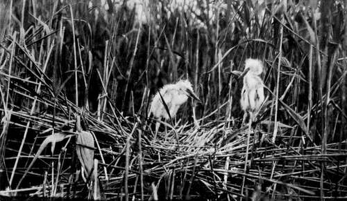
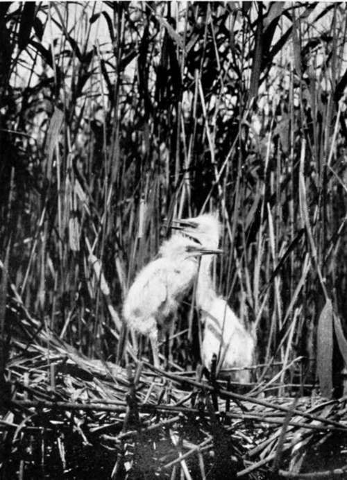
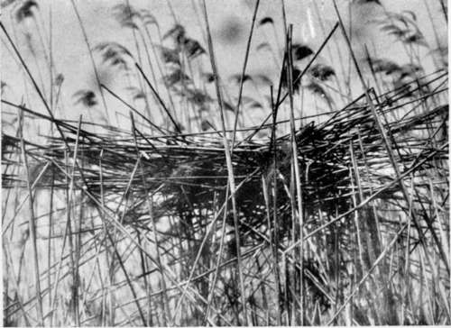

The Balkans Revisited : Montenegro. Part 3
Description
This section is from the book "Bird-Hunting Through Wild Europe", by R. B. Lodge. Also available from Amazon: Bird-Hunting Through Wild Europe.
The Balkans Revisited : Montenegro. Part 3
A large proportion of my visitors were beggars, and amongst their number was a certain ragged and dilapidated Turk whom I seemed fated to meet wherever I went. I had seen him first at Durazzo, where he used to turn up periodically and wheedle money out of B-. I had met him again at Scutari, where he had made himself useful to me in one or two small employments ; again he had accosted me at Vir-pazar, and now one day he was ushered into my room in Dulcigno. I knew his errand perfectly well as soon as I saw him. He was always, according to his own account, starving, after just having walked from some distant town, generally from wherever I had seen him last. If he hadn't always been very moderate in his wants I might have thought that he had followed me from place to place, but I could hardly suppose it worth anybody's while to walk fifty or a hundred miles for the chance of a crown or two. Here he wanted two crowns to make his way to Durazzo, I think. It was quite worth this small sum to be rid of him, for I knew that as long as he remained there he would waylay me every day. So I gave it to him and he departed, after trying to kiss my hand to show his gratitude.
Another more interesting visitor was an elderly Montenegrin. He told me he had collected birds for many years with Count Alleon of Constantinople, both in Turkey and in the Dobrudscha, and pressed me to visit him at his house in a neighbouring hill village, where he had bought a small farm. Accordingly Marco and I walked over one day, and were most hospitably received: too hospitably in one way, for he pressed his home-grown wine on us as if it was of the choicest vintage, and though it was like vinegar in its exceeding sourness, I had to drink it freely to avoid hurting his feelings. We had a good dinner, and slept there a night in the hope of getting a brace or two of Greek partridges in the morning, for he said there were a good many on the surrounding hill-sides. Unfortunately the next day was wet; and though we turned out and made an attempt, the rain was so heavy and the wind of such piercing coldness that we gave it up and returned to his house empty-handed. We were waited upon during our stay by his wife and daughter-in-law-a handsome Albanian in a striking-looking scarlet costume. This man and his son spoke good French, as well as Italian, and had lived in Paris some years. It was curious to hear them lamenting the absence of theatres and picture-galleries. ' Ah, Monsieur,' said one of them, 'c'est un pays sauvage,' speaking of his native country. However, they seemed prosperous for Montenegrins, and were, I expect, contented enough; but the sight of a foreigner had served to awake memories of half-forgotten experiences.
Young Great White Herons
There were not many birds to be seen in this barren and stony country. The most interesting, because it was new to my experience, was the Alpine Swift, Cypselus melba. There were fair numbers of them flying at tremendous speed, sweeping along the sides of the rocky valleys and mounting high up into the sky. Marovitch told me that he knew a place at some distance where they bred, but said that it was a matter of extreme difficulty to reach their eggs. I was glad to receive a specimen which Marco shot for me the next day at Val de Noche.
All this while I had not forgotten the chief object of my visit to Montenegro, which was to obtain some more eggs of Ardea alba, the Great White Heron, which I had found breeding last year, but too late to get more than one clutch of eggs on the point of hatching. This time I had resolved to try another locality, not so remote and inaccessible, where I fully expected to find them.
But though this place was nearer, it was not so easy to reach as I anticipated, owing to the exceedingly strong current which fills the rivers from the snow melting on the mountain heights. Marco had borrowed a rude affair, which I suppose called itself a boat. It was a dinghy from one of the small coasters, and was, as usual, miserably equipped with one crooked oar and a broken paddle, one of which he wielded while I used the other. Only after great exertions were we able to force our tubby craft against the stream. Sometimes we hung at a ticklish corner, quite unable to stem the current, and if we relaxed our frantic exertions we were swept down for many yards. After about two hours of extremely hard work we finally reached the spot, and were delighted to find Great White Herons among the thick reeds. But at this date we could find no nests. Still, it was most satisfactory to find them on our first day's search, evidently thinking of nesting if they had not already actually begun to do so. The water was very deep, and we had to support each other as we struggled through the reeds.
Young Great White Herons
Nest Of Great White Heron (Ardea Alba)
Hoopoes, of which I had seen the first on April 4, in Albania, were now to be seen daily, and I shot one this day (April 8), also a Little Owl (Athene noctud). We saw a large flock of Reeves, and stalked them successfully, after a long crawl on hands and knees, only to miss them all ignomini-ously. On the 15th of April we saw Whinchats and Pied Flycatchers, and shot a Black Chat. On this day we paid another visit to the White Heron locality, and found four nests, in one of which was one egg ; there were also Purple and Common Herons, apparently nesting, or about to nest, in close proximity.
Continue to:
- prev: The Balkans Revisited : Montenegro. Part 2
- Table of Contents
- next: The Balkans Revisited : Montenegro. Part 4